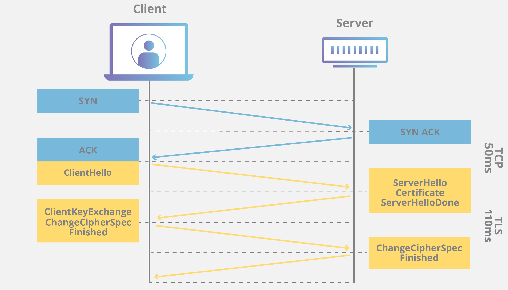

HTTPS暴露访问地址
由于网络通信有很多层，即使加密通信，仍有很多途径暴露你的访问地址，比如：
- DNS查询：通常DNS查询是不会加密的，所以，能看到你DNS查询的观察者（比如运营商）是可以推断出访问的网站
- IP地址：如果一个网站的IP地址是独一无二的，那么只需看到目标 IP地址，就能推断出用户正在访问哪个网站。当然，这种方式对于多网站共享同一个IP地址（比如CDN）的情况不好使
- 流量分析：当访问一些网站的特定页面，可能导致特定大小和顺序的数据包，这种模式可能被用来识别访问的网站
- cookies或其他存储：如果你的浏览器有某个网站的cookies，显然这代表你曾访问过该网站，其他存储信息（比如localStorage）同理
一、HTTPS简介
我们每天访问的网站大部分是基于HTTPS协议的，简单来说，HTTPS = HTTP + TLS，其中：
- HTTP是一种应用层协议，用于在互联网上传输超文本（比如网页内容）。由于HTTP是明文传递，所以并不安全
- TLS是一种安全协议。TLS在传输层对数据进行加密，确保任何敏感信息在两端（比如客户端和服务器）之间安全传输，不被第三方窃取或篡改
- SSL（安全套接字层）是为 HTTP 开发的原始安全协议。不久前，SSL 被 TLS （传输层安全性）所取代。SSL 握手现在称为 TLS 握手，尽管“SSL”这个名称仍在广泛使用。
所以理论上，结合了HTTP和TLS特性的HTTPS，在数据传输过程是被加密的。但是，TLS建立连接的过程却不一定是加密的。
二、TLS的握手机制
何时进行 TLS 握手？
用户导航到一个使用 HTTPS 的网站，浏览器首先开始查询网站的[原始服务器]，这时就会发生 TLS 握手。在任何其他通信使用 HTTPS 时（包括 [API 调用]和 [DNS over HTTPS]查询），也会发生 TLS 握手。
通过 TCP 握手打开 [TCP ]连接后，将发生 TLS 握手。
当我们通过TLS传递加密的HTTP信息之前，需要先建立TLS连接，比如：
- 当用户首次访问一个
HTTPS网站，浏览器开始查询网站服务器时，会发生TLS连接 - 当页面请求
API时，会发生TLS连接
建立连接的过程被称为「TLS握手」，根据TLS版本不同，握手的步骤会有所区别。

但总体来说，「TLS握手」是为了达到三个目的：
- 协商协议和加密套件：通信的两端确认接下来使用的
TLS版本及加密套件 - 验证身份：为了防止“中间人”攻击，握手过程中，服务器会向客户端发送其证书，包含服务器公钥和证书授权中心（即
CA）签名的身份信息。客户端可以使用这些信息验证服务器的身份 - 生成会话密钥：生成用于「加密接下来数据传输」的密钥
三、TLS握手机制的缺点
虽然TLS握手机制会建立安全的通信，但在握手初期，数据却是明文发送的，这就造成「隐私泄漏」的风险。
在握手初期，客户端、服务端会依次发送、接收对方的「打招呼信息」。首先，客户端会向服务端打招呼（发送「client hello信息」），该消息包含：
- 客户端支持的
TLS版本 - 支持的加密套件
- 一串称为「客户端随机数」（
client random）的随机字节 SNI（Server Name Indication）等一些服务器信息
服务端接收到上述消息后，会向客户端打招呼（发送「server hello消息」），再回传一些信息。
其中，SNI（Server Name Indication，服务器名称指示）就包含了用户访问的网站域名。服务器使用这个域名来选择正确的 SSL 证书，从而确保与客户端之间的通信是安全的。
那么，握手过程为什么要包含SNI呢？
这是因为，当多个网站托管在一台服务器上并共享一个IP地址，且每个网站都有自己的SSL证书时，那就没法通过IP地址判断客户端是想和哪个网站建立TLS连接，此时就需要「域名信息」辅助判断。
所以，SNI作为TLS的扩展，会在TLS握手时附带上域名信息。由于打招呼的过程是明文发送的，所以在建立HTTPS连接的过程中，中间人就能知道你访问的域名信息。
企业内部防火墙的访问控制和安全策略，就是通过分析
SNI信息完成的。虽然防火墙可能已经有授信的证书，但可以先分析
SNI，根据域名情况再判断要不要进行深度检查，而不是对所有流量都进行深度检查
那么，这种情况下该如何保护个人隐私呢？
四、Encrypted ClientHello
Encrypted ClientHello[1]（ECH）是TLS1.3的一个扩展，用于加密Client Hello消息中的SNI等信息。
当用户访问一个启用ECH的服务器时，网管无法通过观察SNI来窥探域名信息。只有目标服务器才能解密ECH中的SNI，从而保护了用户的隐私。
当然，对于授信的防火墙还是不行，但可以增加检查的成本
开启ECH需要同时满足：
- 服务器支持
TLS的ECH扩展 - 客户端支持
ECH
比如，cloudflare SNI测试页支持ECH扩展，当你的浏览器不支持ECH时，访问该网站sni会返回plaintext。
五、总结
虽然HTTPS连接本身是加密的，但在建立HTTPS的过程中（TLS握手），是有数据明文传输的，其中SNI中包含了服务器的域名信息。
虽然SNI信息的本意是解决「同一IP下部署多个网站，每个网站对应不同的SSL证书」，但也会泄漏「访问的网站地址」。
ECH通过对TLS握手过程中的敏感信息（主要是SNI）进行加密，为用户提供了更强的隐私保护。